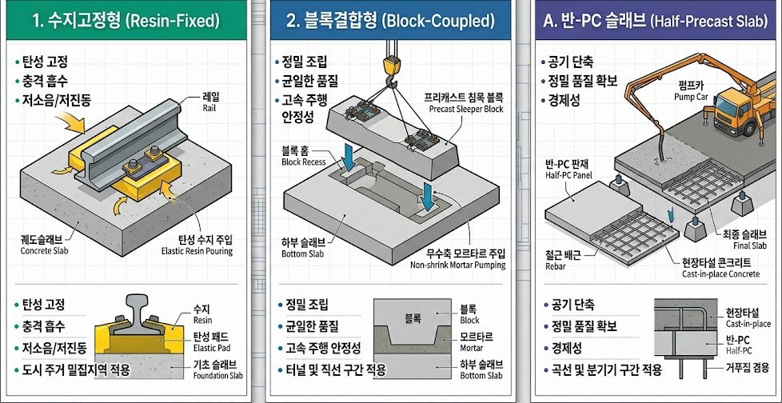
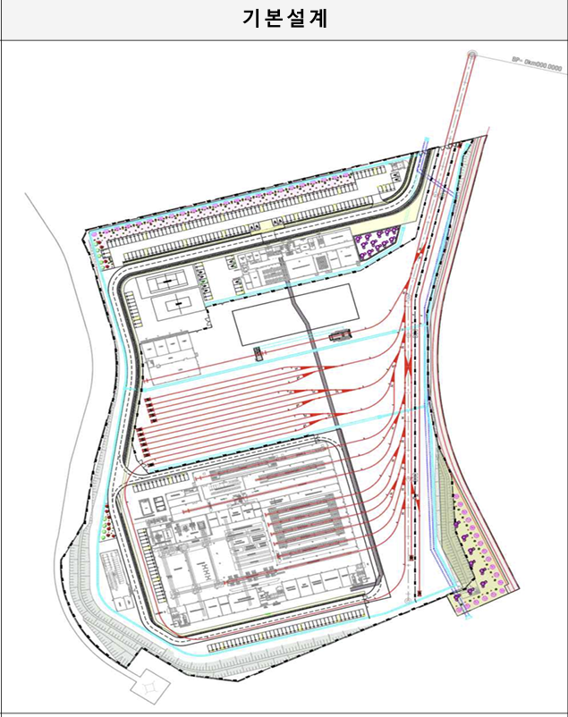
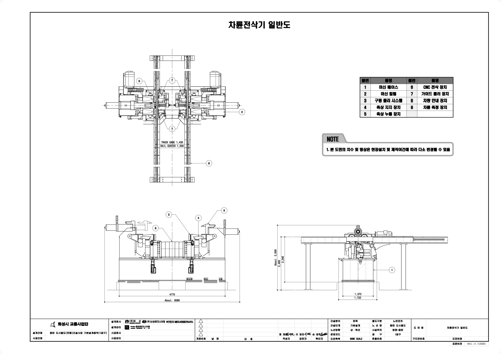

동탄도시철도(트램) 건설사업
트램 기술제안 통합 대시보드
각 공종 분야 카드를 선택하시면 매뉴얼 본문 내 해당 기술제안 가이드라인 및 설계 검토 요건 위치로 바로 스크롤합니다.
트램 통합 기술제안 인터페이스 맵 (3D)

▲ ▲ 동탄트램을 구성하는 9개 핵심 분야 — 철도계획, 노반(지장물이설), 건축, 차량기지, 건축계획, 토질·기초, 구조, 시스템(전기·통신·신호), 궤도가 트램을 중심으로 유기적으로 연결되어 있습니다.
01. 철도계획
이동 ➔트램 노선 최적 선형 계획 수립 및 도로 차로 배분 조율
02. 토질 및 기초
이동 ➔시험굴착 기반 지반침하 방지 및 사면 안정성 검증
03. 구조
이동 ➔교량 기초, 옹벽 공간 충돌 방지 및 방호 구조 계산
04. 궤도
이동 ➔매립형 궤도 슬래브와 하부 노반 다짐 정합성 조율
05. 건축
이동 ➔정거장 구조물, 도시 경관 승강장 배치 및 배리어프리(BF) 통합 설계
06. 차량기지
이동 ➔기지 내부 인입선 궤도 및 대용량 인입 관로 계획 설계
07. 검수
이동 ➔차량 유지보수 정밀 검수 장비 설치 기초 계획 수립
08. 시스템
이동 ➔특고압 인입, 무가선 충전 및 신호/통신 케이블 간 유도방지
09. 노반/지장물
이동 ➔지하시설물 간섭 조사, 유관기관 협의 및 이설 시공 관리
1. 철도계획
동탄트램의 노선 선정 최적화, 정거장 위치 계획 및 도로 차로 기하구조 배분과 운영 효율성 강화를 위한 철도계획 기본 검토 지침입니다.
1.1 철도계획 개요
동탄도시철도(트램) 사업의 철도계획은 기존 도로 교통 차로를 활용하여 트램 노선을 배치하는 대중교통 활성화 계획에 기초합니다. 기본설계 도서 검토 시에는 장래 도시교통 정비 기본계획 및 광역교통 개선 대책과의 유기적인 연계성을 최우선으로 검증해야 합니다.
1.2 트램 선형 계획
트램의 기하학적 종단 및 평면 선형은 차량의 등판 한계(동력) 및 곡선 반경(회전 성능)에 맞춰 엄격히 계획되어야 하며, 교차로 내 신호 간섭을 최소화하도록 설계되어야 합니다.
1.3 본선 복선구간 표준횡단 및 공동관로
본선 복선구간의 시스템 공동관로 표준횡단면도 모식도입니다. (도면의 모든 수치, 층계 구조, 관로 위치를 완벽하게 고증하여 재구현했습니다.)
01. 철도계획
02. 토질 및 기초
6. 토질 및 기초
지반 침하 방지, 사면 안정성 확보 및 교량 기초 지지력 검증 실무 요건입니다.
2.1 [시각적 개요] 트램 토공사 단면 및 3대 핵심 공법 모식도
[그림 6-1] 지하 매설물(통신/전력관)과 트램 하중 상호작용 개념도
도심지 한복판을 관통하는 동탄트램은 일반 철도와 달리 도로 하부에 이미 매설된 수많은 통신, 상하수도, 전력관로와 상호작용합니다. 토공사는 트램의 거대한 하중이 이러한 기존 지장물을 파손하지 않도록 안전한 기초를 다지는 최우선 작업입니다.
📌 토질 및 기초 공학 3대 핵심 설계 모식도 (개요)
[그림 3-1] 동탄트램 토질 및 기초 분야 3대 핵심 공법 구조 모식도 (연약지반 보강, 흙막이 가시설, 교량 말뚝기초)
2.2 [법규 및 지침] 관련 규정 및 입찰 요구사항
- 철도설계기준(노반편): 노면전차 궤도 하부 노반의 지지력 및 다짐도 기준.
- 구조물기초설계기준(KDS): 도심지 연약지반 치환 및 가시설 설계 기준.
- 화성시 지질조사 요구수준: 정거장 구간 시추조사 간격 및 GPR(지표투과레이더) 탐사 의무화.
2.3 [설계 단계] 기초 설계 및 🚨초보자 필수 체크리스트
트램은 승용차와 달리 바퀴 하나가 누르는 힘(축중)이 매우 큽니다. 이 하중이 지하 매설물로 직접 전달되지 않도록 하중 분산형 기초 및 토공 설계가 이루어져야 합니다.
- Q1. 일반 트럭 하중이 아닌 '트램 특유의 집중 축중(Axle Load)'을 견디도록 지반 지지력을 설계했는가?
- Q2. 정거장 쉘터(캐노피) 및 전차선 지주(Catenary Pole)의 전도 방지를 위한 독립 기초 형식이 적절하게 반영되었는가?
2.4 [집행 단계] 굴착 침하 리스크 및 🚨초보자 필수 체크리스트
동탄 신도시는 이미 아스팔트 포장 아래 수많은 관로가 얽혀 있습니다. 흙막이 가시설을 세우거나 터파기를 할 때 0.1mm의 오차라도 발생하면 대형 싱크홀이나 단수/단전 사고로 직결됩니다.
- Q1. 굴착 작업 전, 도면상의 매설물 위치와 실제 GPR(레이더) 탐사 결과가 일치하는지 교차 검증을 완료했는가?
- Q2. 여름철 장마나 집중호우 시, 터파기 구간으로 물이 유입되어 흙막이가 붕괴(싱크홀)되지 않도록 양수기 및 배수 계획이 수립되었는가?
03. 구조
7. 구조
교량, 옹벽, 가시설 등 트램 노선 내 주요 콘크리트 및 강재 구조물의 내구성 검증 요건입니다.
3.1 [시각적 개요] 트램 구조물 횡단면도 및 종합 개요
교량, 고가차도, 지하차도 위를 트램이 달릴 때, 일반 자동차의 고무 타이어 하중과 트램 쇳바퀴의 강력한 진동(활하중)이 동시에 구조물을 강타합니다. 이 두 가지 이질적인 하중을 동시에 견뎌내고 100년의 내구성을 확보하는 것이 트램 구조 설계의 핵심입니다.
3.2 [법규 및 지침] 관련 규정 및 입찰 요구사항
- 도로교설계기준(KDS): 노면전차(트램) 활하중 및 충격계수 산정 기준.
- 노면전차 건설 및 운전 등에 관한 규칙: 트램 통과 시 교량의 수직처짐 한계 및 동적 거동 허용치.
- 내진설계기준: 구조물-궤도 상호작용(TBI)을 고려한 특수 내진해석 요구사항.
3.3 [설계 단계] 구조 설계 및 🚨초보자 필수 체크리스트
구조물의 강도뿐만 아니라, 트램이 수십 년간 매일 300회 이상 통과하며 누적되는 '피로(Fatigue)' 파괴를 막기 위한 구조 디테일이 요구됩니다. 특히 토공 구간에서 교량 구간으로 진입하는 '접속부'의 단차 방지 설계가 필수적입니다.
- Q1. 트램이 수십 년간 반복해서 지나갈 때 콘크리트 내부에 쌓이는 '피로 하중(Fatigue Load)'을 구조 계산(유한요소해석)에 명확히 반영했는가?
- Q2. 도로부(흙)와 교량부(콘크리트)가 만나는 지점에 발생하는 부등침하를 막기 위한 '접속 슬래브(Approach Slab)'가 충분한 길이로 설계되었는가?
3.4 [집행 단계] 시공 품질 및 🚨초보자 필수 체크리스트
설계가 완벽해도 현장에서 콘크리트 타설 후 균열이 발생하면 그 틈으로 빗물이 스며들어 트램 레일 철근을 부식시킵니다. 철저한 양생 관리와 조인트 시공 정밀도가 요구됩니다.
- Q1. 기존 아스팔트와 트램 궤도 콘크리트 접속부에 '단차(높이 차이)'가 생기지 않도록 레벨기 측량 관리가 철저히 이루어지고 있는가? (단차 발생 시 탈선 위험)
- Q2. 궤도 하부 콘크리트를 칠 때, 균열이 가지 않도록 수화열 제어 및 충분한 살수 양생 조치를 취하고 있는가?
04. 궤도
9. 궤도
매립형 궤도 슬래브 형식 선정, 레일 신축 이음 및 진동 차단 패드 설계 요건입니다.
4.1 [시각적 개요] 동탄트램 주요 궤도설계 제원 및 단면 상세
자갈 위에 레일을 까는 일반 기차와 달리, 트램은 도로 아스팔트 속에 레일이 파묻힌 매립형 궤도(Embedded Track)를 사용합니다. 버스와 자전거가 레일 위를 지나다녀야 하므로 완벽한 평탄성을 유지해야 하며, 쇳소리를 잡는 특수 방진 기술이 필요합니다.
📊 동탄트램 주요 궤도설계 제원 및 단면 상세 (기본설계 기준)
동탄트램 1, 2공구에 적용되는 궤도 물량, 시공 단면 스펙, 그리고 전용 레일 규격입니다. 현장 감리 및 시공 시 반드시 교차 검증해야 할 핵심 설계치입니다.
1. 공구별 궤도 물량 총괄
| 구분 | 1공구 | 2공구 |
|---|---|---|
| 총 연장 | 35.561km | 32.494km |
| 궤도 총괄 | 총 궤도부설연장: 68.055km | |
| 분기기 부설 | 16틀 | 19틀 (총 35틀) |
| 수지고정형 (반-PC 슬래브 시공) |
2.760km | 30.701km (주력) |
| 블록결합형 (현장타설 시공) |
32.801km (주력) | 1.793km |
2. 궤도구조 및 하부 단면 상세 설계치
🔹 수지고정형 + 반-PC 슬래브 (2공구 주력)
- 레일 체결: Grooved Rail + 측면 필러 + 레일고정수지 충전
- 시공 폭(Width): 2,800mm (단선 기준)
- 궤간(Gauge): 1,435mm (표준궤)
- 상층부: 반-PC 슬래브 + 콘크리트 포장
- 도상콘크리트(TCL): 두께 262mm (fck=30MPa)
🔸 블록결합형 + 현장타설 (1공구 주력)
- 레일 체결: Grooved Rail + 내/외측 필러블록 + 하부 레일패드 결합
- 시공 폭(Width): 2,200mm (도상 폭 2,000mm)
- 궤간(Gauge): 1,435mm (표준궤)
- 상층부: 상부 포장 없이 궤도 슬래브 현장 직접 타설
- 도상콘크리트(TCL): 두께 380mm (fck=30MPa)
📌 동탄트램 궤도형식(수지고정형 vs 블록결합형) 및 시공공법(반-PC 슬래브) 세부 비교 상세도

[그림 4-2] 동탄트램 궤도형식별(수지고정형 탄성패드 주입, 블록결합형 무수축 모르타르, 반-PC 슬래브 펌프카 타설) 하부 구조 및 특징 비교 상세도
3. 레일 규격 (홈붙이 레일)
- 형식: 홈붙이 레일 (Grooved rail) - 54G2 (41GP) 규격 적용
- 단면 치수: 상부 폭(홈 포함) 116.9mm / 하부 폭 141.5mm / 총 높이 152.5mm
- 표준 길이: 단위 레일 길이 L = 18.0m
- ※ 홈붙이 레일은 자동차 및 자전거 타이어가 궤도에 빠지지 않도록 특별히 고안된 트램 전용 레일입니다.
4. 매립형 궤도구조 기본설계 현황 (적용구간)
각 궤도구조는 지반 및 구조물 조건에 따라 아래와 같이 분리 적용됩니다.
| 구분 | 블록결합형 | 수지고정형(반PC) |
|---|---|---|
| 적용구간 | 본선(토공) 및 차량기지 | 본선 구조물(교량, BOX) |
| 부설연장 | 38.717km | 27.677km |
| 비율 | 58.31% | 41.69% |
| 비고 | 전체연장: 66.394km (100%) | |
모든 궤도 하부에는 부등 침하를 방지하기 위해 도상 안정층(HSB, fck=18MPa) 두께 200mm와 그 아래 강화노반(노반변형률계수 EV2=80MPa) 두께 200mm가 원지반 위에 공통적으로 정밀 시공되어야 합니다.
철도 배선약도 및 세부 공법 대시보드
1공구 및 2공구의 궤도구조, 시공공법 및 주요 구조물 현황 인터랙티브 맵
범례 및 구조 정보
궤도 구조 (숫자)
시공 공법 (알파벳)
💡 스마트 탐색 가이드
범례 항목의 [강조 보기] 단추에 마우스를 올리거나 클릭하면, 해당 구조 및 공법이 반영된 선로 구간이 도면상에서 실시간 하이라이트 처리됩니다!
배선약도 및 공구 구조 시각화
안내 및 도움말
배선도 상의 선로 분절 구간(1/A, 2/B) 및 교량, 터널 아이콘을 클릭하시면 해당 구조물과 적용 공법의 핵심 정보가 여기에 표시됩니다.
1공구 상세 제원
| 구분 | 수지고정형(1) / 반-PC(A) | 블록결합형(2) / 현장타설(B) |
|---|---|---|
| 비율 / 연장 | 2.760 km (7.7%) | 32.801 km (92.3%) |
| 특징 | 진동 극소화 특화 구간 | 고강도 지반 안정 구간 |
2공구 상세 제원
| 구분 | 수지고정형(1) / 반-PC(A) | 블록결합형(2) / 현장타설(B) |
|---|---|---|
| 비율 / 연장 | 30.701 km (94.5%) | 1.793 km (5.5%) |
| 특징 | 고속주행 안정 최적화 | 교량 접속 전이 구간 |
4.2 [법규 및 지침] 관련 규정 및 동탄트램 입찰안내서(RFP) 요구사항
본 사업의 궤도설계는 국토부 가이드라인을 준수하며, 특히 발주처의 입찰안내서(8.4 기술에 관한 사항 - 2.7 궤도분야 설계지침)의 절대 요건을 만족해야 합니다. 이 지침을 위반할 경우 설계 및 시공 부적합 판정을 받을 수 있습니다.
📑 동탄트램 입찰안내서 궤도분야 핵심 지침 (요약)
[일반사항 핵심 규정]- 하부 노반 강도 강제 (바항): 강화노반상(동상방지층) 위에 도상 안정층(fck=18 MPa 이상) 및 콘크리트도상층(fck=30 MPa 이상)으로 구성 필수.
- 유지보수성 극대화 (카항): 매립궤도에서 향후 레일 교체 시 콘크리트 도상을 철거(파쇄)하지 않고, 레일 트러프 내에서 레일만 철거/설치가 가능한 구조로 설계할 것. (부득이한 경우 최소 시공법 제시)
- 강성 단차 방지 (파항): 본선 및 분기기 구간의 정적/동적 강성이 일정하도록 설계. 궤도 강성 차이 발생 지점은 궤도강성 체감(Transition) 구간을 검토하여 주행 안정성 확보.
- 매립형 궤도 원칙 (다항): 도로교통 공용, 보행자 횡단, 미관을 고려해 레일매립형 궤도 적용을 원칙으로 함. 본선은 누설 전류 등을 고려해 완전밀폐가 가능해야 함. (단, 전용선 구간은 일반궤도 고려 가능)
- 다분야 연계 검토 (마항): 궤도 단독 설계가 아닌 노반, 전기, 신호, 통신 시스템분야와의 연계성(인터페이스)을 반드시 검토하고, 운영 중 보수한도 초과 틀림에 대한 관리방안 제시.
4.3 [설계 단계] 궤도 설계 및 🚨초보자 필수 체크리스트
트램 궤도 설계의 가장 큰 적은 '소음/진동'과 레일에서 새어 나오는 전기인 '표유전류'입니다. 이를 완벽하게 차단하기 위해 레일을 두꺼운 고무(Elastomer)로 꼼꼼하게 감싸는 설계가 생명입니다.
- Q1. 트램 레일에서 새어 나오는 전기(표유전류)가 주변 상수도관을 부식시키지 않도록, 레일 주변 절연재(Elastomer Box)가 빈틈없이 설계되었는가?
- Q2. 도심지 교차로 구간에서 자동차 바퀴가 트램 레일 홈(Flangeway)에 빠지지 않도록 적절한 덮개(Filler)나 특수 형상이 채택되었는가?
4.4 [집행 단계] 궤도 부설 및 🚨초보자 필수 체크리스트
매립형 궤도는 한 번 콘크리트를 부어 굳히고 나면 수정이 사실상 불가능합니다. 타설 전 레일의 밀리미터(mm) 단위 정밀 조립과, 우기 시 궤도 홈에 빗물이 고이는 것을 막는 배수 처리가 관건입니다.
- Q1. 콘크리트 타설 전, 레일의 좌우 높낮이(Cant)와 폭(Gauge)이 오차 범위 내로 조립되었는지 정밀 측량을 거쳤는가?
- Q2. 폭우가 올 때 궤도 홈에 물이 고여 트램이 미끄러지지(수막현상) 않도록, 궤도 내 선형 배수구(Trench) 구배 시공을 명확히 확인했는가?
05. 건축
3. 건축
동탄트램 지식망에서 검증된 정거장 캐노피 높이, 곡선부 승강장 연단 간격 리스크 및 배리어 프리(BF) 설계 정합성 검토 가이드라인입니다.
5.1 개요 및 설계 기본 방향
트램 건축설계 단계에서는 궤도 차량 주행 안전을 위한 건축한계 이격 확보와 교통약자 편의 제공을 위한 법적 기준을 필수 준수해야 합니다. 본 가이드라인은 동탄트램 지식그래프 DB의 규격 충족 검증 규칙에 기반하여 설계 정합성을 검토하도록 유도합니다.
지식그래프 연동 필수 법령 및 기준
- 도시철도법 및 도시철도정거장 설계지침: 정거장 플랫폼 및 대합실 최소 통과 유효폭 규격 검증.
- 교통약자의 이동편의 증진법 / 장애인차별금지법: 장애물 없는 생활환경(BF) 인증 우수등급 이상 취득 의무 준수 확인.
- 자전거 이용 활성화에 관한 법률: 정거장 인근 자전거 거치대 의무 규격 및 자전거 도로 연계 설계 검토.
5.2 건축계획 및 공간 배치 가이드 (Planning & UX)
🔍 정거장 계획 핵심 영향 요인 분석
- 이용객 수요 및 환승 연계성: 장래 교통 수요를 예측하여 승강장의 폭과 길이를 결정하고, 인접 버스 정류장 등 타 교통수단과의 환승 동선을 최소화합니다.
- 교통량 및 신호체계: 정거장 설치로 인한 기존 도로의 차로 감소가 차량 정체에 미치는 영향을 분석하고, 교차로 신호 연동 체계와 트램 우선 신호를 조율합니다.
- 지반 및 매설물 조건: 승강장 기초 구조물 시공의 안정성을 확보하고, 하부의 복잡한 지하 관로 및 지장물 이설 가능성을 사전에 파악합니다.
- 보행 접근성 및 배리어프리(BF): 100% 저상 트램의 특성을 살려 단차 없는 안전한 탑승 환경을 구축하고 횡단보도와의 직결 동선을 설계합니다.
- 도로 기하구조 및 물리적 한계: 도로의 경사도(구배)와 곡선반경 한계 내에 정거장을 배치하며, 안전을 위한 차량 한계 및 건축 한계(Clearance) 여유폭을 엄격히 준수합니다.
- 환경 및 소음 규제: 정거장 주변 거주지 및 상업 시설에 대한 소음/진동 기준을 만족하도록 설계적 저감 대책을 반영합니다.
동탄역 등 주요 특화 정거장은 지역 고유의 상징성과 보행 동선 흐름을 고려하여 **동탄역 특화 정거장 디자인가이드라인** 및 화성시 경관조례를 준수해야 합니다.
⚠️ [리스크: 304] 곡선부 승강장 연단 간격 위반 검증 가이드
리스크 현황: 304 정거장 기본설계 당시, 궤도 평면 곡선 반경에 따른 열차 차체의 편량 및 좌우 동적 흔들림(Rolling)으로 인해 승강장 연단과 차체 사이의 간격이 법적 허용 기준인 **\(50mm\) 초과**되는 리스크가 지식망에서 적발되었습니다.
대책: 곡선 구간 승강장 상세 단면 설계 시 궤도 확폭량 및 차량 편량각을 개별 검산하여 연단 간격 안전기준을 확보하고, 국토교통부 매뉴얼에 명시된 횡단부 발빠짐 방지용 고무안전발판 규격을 설계에 명확히 표기해야 합니다.
5.3 정거장 구조 및 외장 마감 설계
도로 중앙에 노출되는 노면전차 정거장 캐노피는 가외 기후 하중을 견뎌야 하며, 지하 지장물 간섭이나 도로 차로 점용 한계를 넘지 않는 유효 높이를 유지하는 프레임 강도 설계가 필수적입니다.
⚠️ [리스크: 107/201/301] 정거장 캐노피 높이 위반 검증 가이드
리스크 현황: 107, 201, 301 정거장 설계 도서 상에서 캐노피 상단 기둥 및 지붕 마감 두께(H형강 규격)의 하중 보강 여유가 설계 팩트에 잘못 반영되어, 입찰안내서(RFP) 의무 요건인 **캐노피 유효 높이 \(3.8m\)** 규격을 불충족(미달)하는 위반 리스크가 지식망 연동 결과 적발되었습니다.
대책: 캐노피 구조 프레임의 단면 중심 높이를 상향 재조정하고 **'캐노피 높이 상향 및 H형강 강재 보강공'**에 필요한 추가 물량과 비용을 내역서 상에 PS(Provisional Sum) 예산 및 수량으로 적정 반영했는지 검증해야 합니다.
5.4 설비 및 입체 인터페이스 조율
정거장 기계설비(환기, 급배수, 소방) 및 통신 설비(CCTV 폴, PIDS 행선안내판 등)는 궤도 노반과 지하 지장물과의 충돌 위험이 가장 조밀한 인터페이스 영역입니다.
- 궤도-건축 한계 조율: 승강장 연단의 구조 마감과 궤도 매립형 슬래브 배수 트렌치 간의 단차 이격을 3D BIM 모델 상에서 우선 검산합니다.
- 지하 매설물 간섭: 정거장 전기 인입 강관 및 우수 횡단관의 굴착 평면도 상 설계가 주변 한전 맨홀, 삼천리 가스 중압관로, 광역상수관과 최소 \(0.3m\) 이격 거리를 충족하는지 대조합니다.
5.5 시공 및 유지관리 단계 가이드
차로 혼잡 유발을 방지하는 프리캐스트(Precast) 급속 제작 공법 및 완공 후 BIM Level 2 준공 도서와 시설물 유지관리 시스템(FMS)과의 통합 설계 데이터 매핑 검토를 수행합니다.
5. 건축계획
도시 경관 및 유동인구 쾌적성 향상을 위한 정거장 배치 계획과 배리어 프리(BF) 설계 최적화 기준입니다.
5.6 환경 및 경관 계획
정거장 외관은 투명한 강화유리 스크린과 경량 프레임을 적용해 주변 가로경관 시야 차단을 막고, 캐노피 상단에 슬림형 건물일체형 태양광(BIPV) 시스템을 주입하여 친환경 에너지를 확보합니다.
5.7 승강장 배치 및 배리어 프리(BF) 설계
플랫폼은 휠체어 단차 1.5cm 이하, 진입로 경사도 1/12 이하 요건을 의무 이행하여 시각장애인 유도블록 및 점자 안내판 설치까지 연계함으로써 교통약자 이동 권리를 완벽 보장합니다.
06. 차량기지
4. 차량기지
노면전차 차량기지 구축의 핵심 설계 요소를 정의하고, 설계/집행 단계에서 원가 상승 및 공기 지연 리스크를 선제 차단하기 위한 단계별 검증 규격입니다.
6.1 [시각적 개요] 동탄트램 차량기지 기본설계 평면도

[그림 10-1] 동탄트램 차량기지 기본설계 평면도
동탄트램은 전선이 없는 '무가선(배터리) 저상 트램'입니다. 무거운 전기 장치와 배터리가 모두 트램 '지붕(Rooftop)'에 올라가 있습니다. 따라서 일반 지하철처럼 밑에서 올려다보며 정비하는 것이 아니라, 지붕 높이에서 정비하는 특수 고소작업 환경이 차량기지의 핵심입니다.
6.2 [법규 및 지침] 관련 규정 및 입찰 요구사항
- 철도차량기지 설계지침: 유치선, 검수선, 세척선 분리 및 동선 간섭 배제 원칙.
- 산업안전보건법: 루프탑 고소작업대 추락 방지 시설 및 크레인 안전 규정.
- 소방법규 및 배터리 화재 지침: 대용량 배터리 충전 설비 주변의 화재 감지 및 소화 설비 기준.
6.3 [설계 단계] 검수설비 설계 및 🚨초보자 필수 체크리스트
차량과 장비, 건물이 톱니바퀴처럼 맞물려야 합니다. 차량 크기에 맞는 점검대, 대차를 빼내는 드롭피트(Drop Pit) 장비 등이 건축물 구조에 정확히 반영되어야 합니다.
- Q1. 지붕에 위치한 배터리에 안전하게 접근할 수 있는 '루프탑 고소작업대'가 건축 설계에 반영되었는가?
- Q2. 차량기지 내 궤도의 회전 반경이 트램 차량이 탈선 없이 꺾을 수 있는 '최소 곡선 반경(R=25m 이상)'을 넉넉히 확보했는가?
6.4 [집행 단계] 설비 반입 및 🚨초보자 필수 체크리스트
건물이 완성된 후 거대한 차륜 전삭기(Wheel Lathe)나 리프팅 잭이 들어올 때, 입구가 좁거나 건물 바닥이 하중을 견디지 못하면 현장은 마비됩니다. 철저한 인터페이스 검증이 생명입니다.
- Q1. 수십 톤에 달하는 기계설비 반입 시, 건축팀의 바닥 기초 지지력과 기계설비팀의 장비 하중 스펙을 상호 교차 검증(Cross-check) 했는가?
- Q2. 검수 장비들에 동력을 공급하는 전원 선로가 트램 차량 충전 시스템과 주파수 간섭을 일으키지 않는지 확인되었는가?
07. 검수
검수고 내부 작업 크레인, 하부 휠 트루잉 장비 규격 및 차량 일상/정밀 검수 시설 계획 지침입니다.
7.1 검수 기준 및 설비 개요
일일 운행 종료 후 3단계 정기 일상 검수 항목의 흐름도를 정의하고, 차량 바닥 하부 및 지붕 배터리 모듈 작업 데크 설비 규격을 만족시킵니다.
7.2 검수설비 설치 및 유지관리 계획
차륜 선삭 장치 등 중량 검수 설비 설치용 콘크리트 피트(Pit) 굴착 시 주변 철근 구조 배근 하중 전달력을 산정해 붕괴 리스크를 막습니다.
7.3 [초보자 가이드] 트램 차량기지와 검수(정비) 완벽 이해
트램 차량기지는 트램이 고장 없이 안전하게 달릴 수 있도록 정기적으로 '건강검진'과 '치료'를 하는 트램 전용 종합병원입니다. 1공구 기본설계보고서를 바탕으로 주요 시설, 장비 및 프로세스를 알기 쉽게 설명합니다.
🔄 트램의 건강검진 프로세스 (검수 주기)
- 입고 (Check-in): 운행을 마친 트램이 들어오면서 주요 장치의 이상 유무를 점검받습니다.
- 경정비 (가벼운 검진):
- 일상검사 (3일 주기): 3일마다 워셔액, 소모품을 보충하고 출입문이나 브레이크가 잘 작동하는지 가볍게 살피는 수시 점검입니다.
- 월상검사 (3개월 주기): 3개월마다 보다 꼼꼼하게 각 부품의 동작 상태를 점검하는 정기 검진입니다.
- 중정비 (대수술 및 정밀 검진):
- 중간검사 (3년 주기): 3년마다 차량의 각 부분을 해체하고 세부적으로 검사하며 주요 부품을 수선합니다.
- 전반검사 (6년 주기): 6년마다 수만 개의 부품으로 완전히 분해하여 낡은 부품을 새것으로 교체하는 가장 큰 단위의 정밀 수리입니다.
- 출고 (Check-out): 모든 검사를 통과한 트램만이 유치선(주차장)에서 대기하다가 시민들을 맞이하러 출발합니다.
🏢 트램 병원의 주요 건물 (작업장)
- 검수고 (보건소/경정비장): 3일이나 3개월 주기의 경정비가 이루어지는 메인 작업장입니다. 여기서 일상/월상검사 및 가벼운 청소가 진행됩니다.
- 주공장 (종합병원/중정비장): 3년, 6년 주기의 중정비가 진행되는 곳입니다. 대차(바퀴 틀) 정비실, 전동기(모터) 정비실 등 세부 기능실로 나뉘어 있어 부품별 심층 수리가 가능합니다.
- 차체세척고 (대형 세차장): 운행을 마친 트램의 외부 먼지와 오염물질을 깨끗하게 목욕시켜 시민들에게 항상 쾌적한 외관을 제공합니다.
🛠️ 이것만은 알아두자! 핵심 특수 장비
- 차륜전삭기 (바퀴 연마 장비): 쇠로 된 트램 바퀴(차륜)가 레일과 마찰하며 닳거나 찌그러지면 소음과 진동이 심해집니다. 이를 매끄럽게 깎아(전삭) 부드러운 승차감을 복원하는 '발톱깎이' 같은 필수 장비입니다. 차륜전삭선이라는 전용 공간에서 소음과 분진을 막으며 작업합니다.
- 옥상 작업대 (Roof Working Platform): 트램은 에어컨, 판토그래프(전기 공급기) 등 중요 장비가 지붕에 몰려있습니다. 정비사들이 지붕 높이에서 안전하게 점검할 수 있도록 검수고 윗부분에 설치되는 필수 발판입니다.
- 천장크레인 및 리프팅 잭: 무거운 대차나 전동기를 번쩍 들어 올려 분해·조립할 수 있게 해주는 병원의 '수술대' 같은 역할을 합니다.
🏗️ 중량 검수 설비 설치용 콘크리트 피트 단면도
1공구 설계도(검수)에서 추출된 중량 검수 설비용 콘크리트 피트 구조도입니다.

■ 트램 특화 검수 프로세스 플로우 (Tram Inspection Flow)
무가선 트램의 기술적 특성(ESS, 트랙 브레이크 등)을 반영한 단계별 유지보수 및 검수선(Inspection Line) 운용 체계입니다.
Step 1. 차량 입고 및 임시검수선 활용
진입/대기- 일일 운행을 종료한 트램이 차량기지 내 지정된 유치선 또는 검수선으로 진입합니다.
- 임시 검수: 운행 중 이상이 발견된 차량의 경우, 긴급 점검 및 수리를 위한 전용 임시 검수선에 배정되어 고장 진단을 수행합니다.
- 차체 파손, 주요 제어 장치 통신 등 1차 육안 점검 및 시스템 점검이 이루어집니다.
08. 시스템 (전기·통신·신호)
8. 시스템 (전기·통신·신호·관제)
동탄도시철도(트램)의 무가선 급속충전, 도로교통우선신호, LTE-R 무선망, 종합관제(TCC)의 설계 규격 및 현장 유지보수 지침서입니다.
8.1. 일반사항
1.1 매뉴얼의 목적 및 적용 범위
본 지침서는 동탄도시철도(트램) 노선의 전기, 신호, 통신 및 관제 분야 시스템 설비에 대한 운영 요령과 실무 유지관리 기준을 확립하는 데 있습니다. 무가선 배터리 충전 방식 및 도로교통 연계 우선신호 등 트램 특화 분야를 중점 관리합니다.
1.2 주요 용어의 정의
| 약어 (용어) | 공식 명칭 | 시스템 설명 및 역할 |
|---|---|---|
| ATS | Automatic Train Stop (자동열차정지장치) | 루프 코일을 통해 열차 제한 속도를 초과할 시 강제 제동을 인가하는 안전 방호 설비 |
| TCC | Train Control Center (열차운행제어시스템) | 종합관제실에서 실시간 트램의 위치 파악 및 진로 제어를 수행하는 관제 서버 |
| LTE-R | LTE-Railway (철도통합무선통신망) | 700MHz 주파수를 사용하여 차상-지상 간 대용량 데이터 및 음성을 전송하는 국가 재난 통신망 |
| AFC | Automatic Fare Collection (역무자동화설비) | 무인 정거장(오픈형) 요금 징수를 위해 차량 내 탑재된 카드 태그 단말기 및 중앙 전산 서버 |
| IP/MPLS | IP/Multi-Protocol Label Switching | 기지국 및 정거장 간 패킷 전송 신뢰성을 위해 대역폭 이중화를 지원하는 초고속 주전송 백본망 |
📋 [매칭] 8.1 법규 및 기술제안 설계 기준 연계
| 관련 기술 기준 | 국토부 가이드라인 / 입찰안내서(RFP) 요건 | 유지보수 매뉴얼 준수 지침 |
|---|---|---|
| 철도안전법 제26조 | 철도안전관리체계 승인 절차 준수 및 운행 안전 확보 요건 | 일일 운행 전 시스템(신호·통신) 연동 검측 상태 확인 및 이상 로그 아카이빙 처리 의무화. |
| 도시철도법 제22조 | 도시철도차량 및 지상 설비의 안전 기준 표준 적합성 유지 | 설비 임의 개조 금지 및 공인 인증 시험 성적서를 통과한 정품 자재만 유지보수 예비품으로 등록. |
8.2. 동탄트램 시스템 종합 개요
2.1 전체 시스템 계통도 및 운영 개념
동탄트램 시스템은 차량 탑재형 Super-Capacitor 및 대용량 배터리 전원 시스템, 정거장 내 급속 충전장치, ITS 교통 관제실 연동 차상 신호기, 종합관제시스템이 광대역 IP/MPLS 전송망을 기반으로 실시간 동기화되어 움직입니다.
기지 출고 ➔ 정거장 급속 충전 (30초~1분 이내 DC 750V) ➔ 교차로 진입 시 차상 무선 위치 전송을 통한 우선신호 획득 ➔ 시·종점 도달 후 전이중 배터리 자동 밸런싱 충전 이행.
💡 모의 운행 4대 시나리오 설계 수립 배경 및 기술 검증 목적
시뮬레이터 조종 패널에 구성된 4가지 핵심 모드는 동탄 도시철도 RFP 및 안전 지침서의 필수 검증 요건을 반영한 공학적 시나리오입니다.
전송 인프라(IP-MPLS 백본망), 무선 인프라(LTE-R), 관제 컴퓨터(CTC/SCADA) 및 전원 공급망이 상시 동기화되어 작동하는 표준 설계 모델입니다.
혼용 구간 비상 대응 메커니즘을 검증합니다. 차량 비상 호출 수신 시 전철 변전소 전력을 긴급 차단(750V ➔ 0V)하고 궤도 신호기를 강제 적색(정지)으로 떨어트리는 연동 시퀀스입니다.
회차선 진입 시 열차 충돌 및 탈선을 보증합니다. CTC 분기 지령 하달 시 전자연동장치(Interlocking) 및 축검지기 동작 확인 후 선로전환기를 전기적으로 절체합니다.
동탄 트램의 최대 특화 기술인 무가선 운행 생존 능력을 모사합니다. 외부 전선 차단 시에도 차상 대용량 배터리를 소스 삼아 다음 역까지 무정전 대피 주행을 지속합니다.
동탄 도시철도(트램) 시스템 종합 운영 흐름도 및 시뮬레이터
전력·통신·신호·궤도가 융합되어 트램을 움직이고 보호하는 전 과정을 모사합니다.
EMERGENCY STOP (비상 통화 발생)
객실 비상통화 개시 및 비상 무선 제동 차단 적용
궁금한 부분을 마우스로 클릭해 보세요!
도면 상의 트램, 컴퓨터, 안테나, 변전소, 신호등을 터치하면 아주 재미있고 쉬운 비유 설명이 이곳에 표시됩니다.
📋 [매칭] 8.2 인터페이스 및 시스템 보증 기준 연계
| 관련 기술 기준 | 국토부 가이드라인 / 입찰안내서(RFP) 요건 | 유지보수 매뉴얼 준수 지침 |
|---|---|---|
| 시스템 신뢰성 (RAMS) | 전체 가동율 99.99% 이상 보장 및 고장 영향도 분석(FMECA) 의무 적용 | 주요 장비의 가용성 지표를 주간 집계하고 평균 복구 시간(MTTR)을 50분 이내로 수렴 관리. |
| 지자체 ITS 연계 | 화성시/오산시 교통신호제어기(LC)와 트램 차상 보드 연동 계획 표준 준수 | 노선 내 교차로 통신 단절 시 데이터 유실 보정용 차상 GPS 오차 정밀 정비 주기 유지. |
8.3. 전기설비 운영 및 유지관리
⚡ 한눈에 이해하는 동탄트램 전기 계통도
트램을 잘 몰라도 괜찮습니다! 발전소에서 만들어진 고전압 전기가 어떻게 정제되어 정거장 충전기를 거치고, 최종적으로 전선 없는 친환경 무가선 트램을 움직이는지 그 흐름을 시각적으로 확인해 보세요.
🏢 1단계: 한전 전원 수전 (전기 공급의 시작)
AC 22,900V 이중화 수전발전소에서 송전된 154,000V의 초고전압 전기를 한전 변전소로부터 전달받아 트램 전용 기지와 변전소에서 사용할 수 있도록 22,900V(특고압)로 낮추어 받아들이는 첫 번째 관문입니다. 동탄트램은 전력 공급이 중단되는 정전 사고를 막기 위해 수전선로를 2회선으로 구축(이중화)하여 상시 예비 전력을 대기시킵니다.
3.1 [1단계: 송전] 외부 전원 유입 및 한전 특고압 수전 (AC 22.9kV)
한전 변전소로부터 특고압 전력인 AC 22,900V (교류 22.9kV)를 유입받아 안전하게 분배하는 시작 단계입니다. 전력 차단 사고를 원천 방지하기 위해 일반 전력망(1회선) 외에 예비 전력망(2회선 배전계통 백업 - 비상용 전력선 예비선)을 독립 포설(별도 전선 설치)하여 이중화 전원 공급 체계를 갖추었습니다. 주송전선(주요 전력수송선)에 문제가 생기면 절체장치(선로 자동 전환장치)를 통해 0.05초 만에 보조선으로 긴급 전원이 자동 투입됩니다.
3.2 [2단계: 변환] 고밀도 변압 및 직류 정류 (AC ➔ DC 750V 정제 및 필터링)
교류 특고압을 감압(전압 낮춤)하여 정격 DC 750V 직류로 변환하는 핵심 전력 세공 단계입니다. 인명 감전을 원천 예방하고자 특고압 진공차단기(VCB)반과 전압 계측기용 PT반(전압 체크기 보드)을 완전히 분리 격실(물리적 차단 격벽 구조)로 설계하여 작업 안전성을 보장하였습니다. 정류(교류를 직류로 변환) 과정에서 전력 노이즈가 주변 통신 백본망(통신 광케이블 중심선)에 유입되어 우선신호나 무선 제어 컴퓨터가 오작동하는 것을 예방하기 위해, 12-Pulse 다중 스위칭 제어(전류 정밀 정제 방식)와 함께 차단기반에 능동형 고조파 필터(APF - 노이즈 상쇄 소멸 장치)를 연결하여 고조파 왜형률(전기 노이즈로 파형이 일그러지는 정도)을 5% 이내로 엄격히 관리합니다.
3.3 [3단계: 충전] 정거장 충전 단말 및 무가선 초급속 충전 (1,350kW 급속급전)
동탄트램의 상징인 무가선(공중에 고압선이 없이 배터리로 구동되는 방식) 운행을 지원하기 위한 고출력 급속 급전(전력 공급) 단계입니다. 상선(위로 주행하는 선로)과 하선(아래로 주행하는 선로) 트램이 동시에 정거장에 진입하여 초고속으로 충전할 때 전압 강하(충전 속도 저하 및 전력 부족 현상)가 일어나는 것을 방지하기 위해 상·하선 선로별로 충전 케이블망을 완벽히 분리 포설(전선로를 단독으로 각각 설치)하였습니다. 정거장에는 1,350kW 급속 충전장치(초고속 파워 공급기)를 가동하며, 변압기 고장 시 공급 중단 리스크를 방지하고자 시·종점 정거장에는 변압기 2대(이중화 백업 장치)를 병렬 배치(나란히 배치)하여 무중단 충전을 완벽하게 확보합니다.
3.4 [4단계: 저장] 차상 LTO 배터리 및 기지 완속 충전
정거장에서 단시간에 끌어온 고전류 에너지를 차상(열차 내부 지붕 위) 배터리 셀에 저장하는 단계입니다. 동탄트램은 총 용량 127kWh (Super-Capacitor 7kWh 및 고안정성 LTO 배터리 120kWh)로 이중화된 하이브리드 구성을 채택하여, 안전한 방전 깊이(DOD 80% - 배터리 영구 파손 예방을 위한 최대 권장 출력량 변위 한계)를 반영한 102.3kWh의 풍부한 실가용 전력(실제 사용 가능한 여유분 전력량)을 차량 상부에 늘 저장하고 보관합니다. 운행을 모두 마친 심야 시간이나 긴급 대기 시에는 차량기지에 구축된 150kW 완속(천천히 안정적인 속도로 충전) 충전기(완충시간 1시간)에 결선해 배터리 셀 밸런싱(배터리 낱개 셀들의 전압 균일화 작업)을 유도하여 배터리 수명을 극대화합니다.
3.5 [5단계: 소비] 모터 구동 및 귀선전류 전식 방지 대책
차상(열차 내부) 저장된 전기로 최종 구동 모터를 회전시키고, 안전하게 전류를 회수하는 마지막 소비 및 환류(전류가 제자리로 복귀함) 단계입니다. 바퀴를 굴리고 나온 전류가 대지 및 금속 매설물로 흘러 부식을 유발하지 않도록 배류기(Drainage Bond - 누설 전류 강제 회수장치) 및 매립형 배류 전선을 구축하여 누설 전류를 100% 흡수하고 변전소로 다시 회수합니다. 이를 상시 감시하기 위해 관제 SCADA(원격 감시 제어반) 시스템에 실시간 전위 변동 감시 연동을 구축하고, 궤도를 따라 한국전기설비규정(KEC) 규격을 준수한 CU 35㎟ 구리 접지 매설선(누전 방지 접지 구리선)을 포설하여 지상(선로 현장) 보행자의 접촉/보폭 전압 감전 위험을 예방합니다.
📋 [종합 매칭] 8.3 전기설비 표준 가이드라인 및 송전 표준 요건
| 관련 기술 기준 | 국토부 가이드라인 / 입찰안내서(RFP) 요건 | 유지보수 매뉴얼 준수 지침 |
|---|---|---|
| 노면전차 가이드라인 8.7 | 정격 전압 DC 750V 기준, 전압의 허용 변동 한계는 상한 +20%(900V), 하한 -30%(525V) 이내 통제 | SCADA 경보 한계값을 900V 초과 시 경보, 525V 미만 시 경보로 자동 세팅하고 반기별 차단기 탭 조정 실시. |
| 전식 방지 절연 저항 | 매립 레일의 대지 절연저항 표준을 최소 10Ω·km 이상(방수성 슬래브 포함) 설계 반영 요건 | 분기별 레일 절연 상태 측정을 통해 노후 절연 패드 유입 수분 제거 및 절연재 교체 실시. |
| 급속 급전 배터리 충전율 | RFP 요건: 충전 개시 20초 이내에 차상 에너지 저장 장치의 실가용 충전율(SOC) 복구 검증 (1,350kW 급) | 충전 집전 장치용 판토 슈 접촉 압력(표준 120N) 정밀 캘리브레이션 및 슈 마모 한계(10mm) 잔여치 매월 점검. |
| 고조파 관리 표준 (KEC) | 배전계통의 종합 전압 왜형률(THD) 5.0% 이하 유지 및 변전설비 2차측 수전 왜형률 규정 준수 | 반기별로 급속 충전 시의 고조파를 정밀 측정하여 활성 필터(APF) 튜닝을 수행하고 오작동 여부를 예방 점검함. |
| 수배전반 분리 운영 | 입찰요건: 수배전 사고 및 전면 정전 리스크를 예방하도록 특고압 VCB반과 PT반을 분리 설치하여 감전 위험 제거 | 정기 검사 및 긴급 복구 시 분리된 특고압 PT반의 단로기를 먼저 차단하고 활선 시각 표시 상태를 재확인한 후 투입. |
8.4. 신호설비 운영 및 유지관리
4.1 차상운행지원장치(DATP) 및 자동열차정지장치(ATS)
본선의 트램은 시계 운전(수동 운전)을 기본으로 하되, 무가선 궤도 내 지상 ATS 지상자(Transponder)와 차상 수신 안테나 간의 무선 감지를 통해 제한속도 초과 시 자동으로 쇄정 제동이 작동하도록 Fail-Safe 차상방호 로직을 가동합니다.
4.2 트램 우선신호 및 도로교통 연계 제어
일반 도로 혼용 구간에서 트램이 도로 교차로에 진입 시 지연 없이 통과할 수 있도록 지상 ITS(지능형 교통 시스템) 검지장치와 통신 연동을 관리합니다.
교차로 정지선 전방 300m 지점 설치된 지상 무선 검지기가 트램 차상의 우선신호 요청 보드(PPC) 데이터를 수신 ➔ 현장 신호제어기(LC)를 통해 녹색 신호 주기 연장 또는 조기 황색 차단 신호 실행.
📋 [매칭] 8.4 신호 가이드라인 및 우선신호 연계 연동 요건
| 관련 기술 기준 | 국토부 가이드라인 / 입찰안내서(RFP) 요건 | 유지보수 매뉴얼 준수 지침 |
|---|---|---|
| 노면전차 가이드라인 8.8 | 도로교통법 제16조에 따른 노면전차 전용 신호기 연동 및 보행 신호 연계 인터페이스 설계 의무 | ITS 루프 및 지상 검지기(RSE) 안테나 수신 각도 분기 1회 계측 조정. TPD 주기(0.1초 이내) 실시간 전송 테스트 보장. |
| ATS 제한 감속도 | 비상 제동 동작 시 최저 감속도 1.3m/s² 이상을 충족하는 Fail-Safe 연동 차상 방호 한계점 설계 | 차상 자이로 센서 및 휠센서 삭정 데이터 자동 오프셋 수치 보정 장치 영점 조정 실시. |
4.3 [실시간 인터랙티브] 트램 우선신호 및 ATS 비상제동 시뮬레이터
아래 시뮬레이터는 본선 교차로 접근 단계별 우선신호 요청(TPD/PPC) 및 제한속도 초과 시 작동하는 ATS 비상 감속 방호 프로세스를 직접 모의 실험해볼 수 있는 대화형 도구입니다.
본선 신호 시스템 모의 관제 보드
🚦 프로세스 단계별 연동 현황 & 쉬운 원리 해설
트램이 교차로를 향해 일반 도로를 보며 평시 주행하는 상태입니다. 지상 신호기에 어떠한 요청도 전송되지 않은 상태입니다.
8.5. 통신설비 운영 및 유지관리
5.1 LTE-R 및 IP/MPLS 백본 전송망 운영
음성 및 실시간 정비 원격 검수 정보 전송을 처리하는 700MHz 대역 LTE-R 망의 기지국 무선 전계 강도를 노선 전역에서 -95dBm 이상으로 안정 유지합니다. 주 전송망은 Ring 구조의 IP/MPLS 전송 장비를 사용하여 한 지점이 단선되어도 50ms 이내에 즉시 우회 경로로 백업 절체됩니다.
5.2 개방형 역무자동화설비(AFC) 및 안전 통신
동탄트램은 게이트가 없는 '오픈형 승강장'을 운영하므로, 부정 승차 방지를 위해 차내 탑재용 승차 카드 리더기 단말기와 지상 승강장에 배치된 QR/신용카드 단말 통신 상태를 모니터링합니다. 단말 데이터는 기지국 AP를 통해 종합관제실 AFC 정산 중앙 서버로 실시간 암호화 전송됩니다.
📋 [매칭] 8.5 통신 전송망 및 무선 감도 의무 연계
| 관련 기술 기준 | 국토부 가이드라인 / 입찰안내서(RFP) 요건 | 유지보수 매뉴얼 준수 지침 |
|---|---|---|
| 노면전차 가이드라인 제9장 | 철도통합무선통신망(LTE-R) 700MHz 표준 주파수 규격 충족 및 전 노선 전계 강도 -95dBm 이상 상시 보장 | 휴대용 계측기를 이용한 분기별 전 노선 수신 감도 맵 생성 및 음영 지역 내 기지국 RRH 증폭 장치 감도 튜닝. |
| 백본 이중화 복구 시간 | RFP 요건: 기간 전송망(IP/MPLS) 장애 발생 시 Ring 절체 및 경로 백업 복구 지연 시간 50ms 이하 보장 | 유지보수 시 시스템 펌웨어 업그레이드 전 반드시 루프 백 실시간 시뮬레이션을 가동하여 절체 성능 사전 검증. |
8.6. 종합관제실 시스템 운영
6.1 종합관제실 설비 구성 및 기능
TCC(열차운행제어), SCADA(전력원격감시), 통신 및 소방 기계 제어 콘솔이 개별적으로 독립 배치되어 있으며, 대형 멀티 디스플레이(DLP) 화면을 통해 교차로의 트램 위치와 신호 주기를 동시 감시할 수 있도록 연동합니다.
📋 [매칭] 8.6 종합관제 모니터링 콘솔 설계 연계
| 관련 기술 기준 | 국토부 가이드라인 / 입찰안내서(RFP) 요건 | 유지보수 매뉴얼 준수 지침 |
|---|---|---|
| TCC 연동 기술 표준 | 기상 이변 및 도로 돌발 상황 시 전 노선 차량 기지 및 정거장 방송/화상 강제 표출 연동성 구축 | CCTV 연동 제어반의 지연 시간(200ms 이내) 및 IP 카메라 영상 분무 테스트 주기적 시행. |
| DLP 화면 가시성 | RFP 요건: 관제사의 피로도 경감을 위한 인체 공학적 화면 해상도 및 다중 윈도우 스냅 레이아웃 구현 | 화면 깜빡임 유무 점검 및 SCADA 전력망 단선 시 비상 상태 색상 점멸(적색 알람) 작동 여부 모의 테스트. |
8.7. 비상 및 장애 시 대응 조치 (Risk Management)
7.1 한전 정전 발생 시 수동 전환 절차
변전소 전력 차단 발생 시 무정전 전원공급장치(UPS) 및 배터리 백업 뱅크가 즉각 동작하여 신호, 통신, 관제 서버 전원을 최소 2시간 가량 유지시킵니다.
1. 종합관제실에 로컬 제어 권한 획득 요청 ➔ 2. 현장 선로전환기 함 전원 차단 스위치 'Off' ➔ 3. 수동 핸들바 삽입 후 진로 방향으로 수동 크랭킹 회전 ➔ 4. 밀착침 쇄정 상태 확인 및 쐐기 박음질 ➔ 5. 수동 진로 승인 신호 차상 전송.
7.2 교차로 데드락(Deadlock) 꼬리물기 발생 시 비상 연동 조치
트램이 교차로 내 일반 차량 꼬리물기로 궤도 상에 고립되어 신호 주기가 어긋날 시, 관제실 수동 조작 신호 또는 교차로 비상 수동 컨트롤 유닛을 가동하여 인근 도로 보행 신호를 강제 적색으로 전환하고 트램 단독 녹색 진입 신호를 긴급 요청합니다.
📋 [매칭] 8.7 안전 기준 및 비상 전원 기술 연계
| 관련 기술 기준 | 국토부 가이드라인 / 입찰안내서(RFP) 요건 | 유지보수 매뉴얼 준수 지침 |
|---|---|---|
| 도시철도 안전기준 | 정전 및 비상 재난 시 신호/통신 전원 백업 시간 최소 2시간 이상 유지 의무 요건 | 비상 축전지반(UPS) 방전 용량 테스트를 매년 1회 실시하고 셀 불량 발견 시 즉각 균등 충전 및 부분 셀 교체. |
| 선로전환기 수동 취급 | 기지 내 매립형 선로전환기 동작 오류 발생 시 물리적 쇄정 장치의 가동 보장 요건 | 수동 핸들 크랭크 작동 시 잠금 핀 마모 및 수동 전환 접점 센서 신호 피드백 상태 매월 검사. |
8.8. 부록 및 서식
8.1 주요 설비별 정기 유지보수 주기표
| 공종/설비명 | 점검 등급 | 유지보수 주기 | 핵심 점검 항목 |
|---|---|---|---|
| 변전소 정류기 | 정밀 검사 | 분기 1회 (3개월) | 소자 다이오드 누설 감지 및 방열 팬 동작 상태 |
| 정거장 급속충전장치 | 상태 점검 | 매월 1회 | 슈 접촉부 마모율, 하강 실린더 압력 테스트 |
| 지상 ATS 지상자 | 동작 검측 | 반기 1회 (6개월) | 무선 신호 전송 레벨 데시벨(dB) 측정 및 발열 확인 |
| IP/MPLS 라우터 | 소프트웨어 | 매주 1회 | 이중화 절체 응답 시간 계측, CPU 부하 모니터링 |
09. 노반 및 지장물 이설
9.1 매뉴얼의 목적 및 적용 범위
본 매뉴얼은 발주처의 기본설계 도서를 정밀 검토하고 기술제안(Technical Proposal)을 준비하는 단계에서 지상 및 지하지장물(노반 공종)의 조사 절차, 이설 협의, 인허가 획득 및 시공 공사비 정산의 표준 검토 프로세스를 제공합니다. 이를 통해 기본설계 상의 오류나 누락 요소를 사전에 발굴하고, 타 분야 간의 기술적 간섭을 조기에 제거하는 데 목적이 있습니다.
9.2 지하지장물의 분류 및 정의
동탄트램 궤도 하부 및 정거장 주변에 매설되는 핵심 지하지장물은 다음과 같이 정의되며 관리 부서 및 관계 기관과 긴밀한 사전 협의가 요구됩니다.
- 통신 관로: 각 통신사업자(KT, SKT, LGU+ 등) 및 시가 소유한 자가통신망 관로 및 맨홀.
- 상·하수 관로: 지자체 상하수도사업소 관리 하수BOX, 급수관, 압송관 및 집수정 시설물.
- 도시가스 관로: 고압 및 중압 가스 공급 배관 (삼천리도시가스 등).
- 전력 관로: 한국전력공사 관리 고전압 송전선로, 배전선로, 한전 맨홀 및 특고압 수전 계통 인입 배관.
9.1.3 입찰안내서 상의 지장물 관련 법령 및 기술 기준
동탄도시철도 건설공사 입찰안내서(RFP)에 근거하여 지장물 조사, 이설, 인허가 및 시공 단계에서 반드시 준수하고 설계에 반영해야 하는 관계 법령과 표준 기술 기준 목록입니다.
| 구분 | 관련 법령 및 고시 | 핵심 조항 | 입찰안내서 의무 준수 사항 |
|---|---|---|---|
| 도로/점용 | 도로법 및 도로법 시행령 | 제61조 및 제62조 | 도로 굴착 허가증 사전 확보, 지장물 이설을 위한 도로 점용 계획 수립. |
| 지하안전 | 지하안전관리에 관한 특별법 | 제35조 (지하안전평가) | 굴착 깊이에 따른 지하안전평가 이행, 굴착 배후 지반 매설물 계측 계획 의무화. |
| 가스배관 | 도시가스사업법 | 제30조의2 (굴착공사 신고) | EOCS(굴착정보지원센터) 사전 신고, 삼천리도시가스 공동 시굴 및 굴착 시 안전관리자 입회. |
| 상·하수도 | 하수도법 및 수도법 | 제23조 (공공하수도 허가) | 공공 하수BOX/맨홀 및 급수관 이설 사전 허가, 관급 자재 적격 여부 및 복구 다짐 규격 준수. |
| 전력/전기 | 전기사업법 및 전기설비기술기준 | 배전계통 연계 요건 | 한전 이중화 전력 인입(2500kVA) 및 원격감시(SCADA)를 위한 기술 표준 충족. |
| 정보통신 | 정보통신공사업법 | 통신설비 기술기준 | 자가망 및 임대 통신 관로 이설 시 신호 간섭 방지 차폐막 설치 및 이격 기준 확보. |
| 토목시방 | 국토교통부 토목공사 표준일반시방서 | 지장물 정리 조항 | 이설 전 매설물 가시설(가치지/매달기 방호) 상세 구조 계산서 제출 및 안전 조치. |
9.1.4 입찰안내서 상의 지장물 및 매설물 요건
동탄도시철도 건설공사 입찰안내서(RFP) 원문에서 직접 추출한 지장물 관련 규정 및 요건입니다. 실무의 혼선을 줄이기 위해 설계 단계 체크사항과 집행 및 시공 단계 체크사항으로 구분하여 정리하였습니다.
A. 설계 단계 지장물 관련 체크 요건 (RFP 원문)
| RFP 출처 | 입찰안내서 규정 (원문) | 설계 반영 및 검토 기준 |
|---|---|---|
| B공구 (2.2 (차) 지장물 조사) |
"지장물 조사는 공사구간 내 각종 지하매설물 및 지상 시설물을 조사하여 설계에 반영하여야 하며 조사된 지장물은 지장물 현황도에 표기하여야 한다." | 지장물 현황도 내 종류, 규모, 평면 위치의 정확성 확인 |
| B공구 (2.2 (가) 비용 반영) |
"지장물 조사는 공사구간 내 각종 지하 매설물 및 지상시설물을 조사하여 설계에 반영하고, 지장물 이설, 보호 및 복구, 보강 등에 소요되는 제반비용을 반영하여야 한다." | 수량산출서 및 내역서에 지장물 처리 제반 비용 누락 여부 검증 |
| B공구 (2.2 (차) 6조) |
"본 과업노선에는 다수의 상부지장물(신호등, CCTV, 과속카메라 등)이 설치되어 있으므로 관계기관과의 협의를 통하여 이설여부를 검토해야 한다." | 상부 지장물 관리기관과의 이설 계획 협의서 도서 반영 |
| B공구 (2.2 개착영향) |
"개착구조물의 경우 인근구조물 및 지장물의 영향을 검토하고 적정한 계측계획을 수립해야 한다." | 계측 계획 수립 및 지장물 근접도에 따른 계측기 배치 검토 |
| 건축/시스템분야 (E) (설계 제출 성과품) |
설계도서 내 "지장물 보호공 및 인접건물 보호계획도"를 작성하여 제출 성과품에 포함하여야 한다. | 종·횡단 구조물도와 지장물 매달기 방호 가시설 설계 부합 여부 |
B. 집행 및 시공 단계 지장물 관련 체크 요건 (RFP 원문)
| RFP 출처 | 입찰안내서 규정 (원문) | 현장 관리 및 집행 기준 |
|---|---|---|
| 공통 기준 (1.10 (22) 착수보고) |
"입찰자(계약상대자 등)는 기술제안 및 공사착수 전에 현장여건, 지장물 등 지하시설물의 이설 여부 및 공사방법을 검토하고, 그 결과를 발주자에게 보고하여야 한다." | 착공 전 지장물 종합 검토 및 이설 공법 보고서 감독원 승인 |
| 토목분야 (C/D) (안전 및 공사방법) |
"안전에 문제가 된다고 판단되는 각종 지상 및 지하장애물의 이설 여부 및 공사방법을 검토하여야 한다." | 사고 우려가 있는 가스·전력 등 주요 관로 이설 안전성 평가 검토 |
| 토목분야 (C/D) (시공 전 지장물 탐사) |
"시공전 지장물 탐사계획을 수립하여 사전에 보호, 매달기 방법 및 복구 계획을 수립하고 줄파기를 시행한다." | 시공 전 줄파기(인력 시험 굴착) 계획서 수립 및 가방호 승인 |
| 토목분야 (C/D) (위치 비교 검증) |
"줄파기 시행결과 노출된 지장물에 대한 도면을 당초 지장물 위치와 비교하여 위치를 확인하고 지장물 확인시에는 관련기관 입회하에 실시한다." | 기존 설계 도서와 시험 굴착 야장 1:1 비교 대조 및 관리기관 입회 |
| 공통 기준 (1.10 (64) 이설비) |
"계약상대자와 관리기관이 직접 위수탁 계약을 체결하여 이설하는 각종 지하지장물 이설비는 사후원가검토 PS(Provisional Sum) 항목으로 관리한다." | 한전, 삼천리 등 관계 기관과의 직접 협약 체결 및 사후 실비 정산 |
| 공통 기준 (1.10 (65) 분리발주) |
"발주기관이 각 지하지장물의 관리기관과 위수탁 계약을 체결하여 이설하는 경우 각종 지하지장물 이설비는 분리발주하여 발주기관에서 직접 시행할 수 있다." | 발주처 직접 발주 대상 지장물(광역상수도 등)의 업무 구획 정리 |
지장물 이설비는 총액 일괄 계약에서 제외되는 사후 정산(PS) 항목이 주를 이루므로, 설계 단계의 정확한 수량조사와 시공 단계의 실제 투입 증빙(기관 협약서, 세금계산서) 간 매핑 관리가 프로젝트 손익 및 공기 준수의 핵심 열쇠가 됩니다.
9.1.5 지장물 오류 시 타 분야 파급 영향 분석
동탄트램 건설공사는 초천층(얕은 심도) 굴착 방식을 취하고 있어, 지장물 조사 및 시공 단계의 오류는 단순히 토공에 그치지 않고 행정, 계약, 기술(노반/궤도/전기/신호), 예산 등 타 공종 분야에 다차원적이고 치명적인 연쇄 리스크를 초래합니다.
- 파급 리스크: 시공 중 예기치 못한 지장물이 발견될 경우, 복잡한 인허가 및 변경 동의 절차가 선행되어야 하므로 행정 처리가 수개월 지연되고 전체 공정 중단으로 직결됩니다.
- 파급 리스크: 지장물 이설 지연 시 노반 터파기가 중단되어 상부 궤도 부설, 열차 제어를 위한 신호/통신 케이블 포설, 시스템 전원 인입 등이 모두 멈추게 되며, 공종 간 물리적 간섭으로 인한 대규모 재시공 및 인터페이스 부조화 리스크를 유발합니다.
- 파급 리스크: 부정확한 사전 조사는 집행 물량 급증을 낳아 시공사의 예산 한도를 초과하게 만듭니다. 이는 발주처 및 관계 기관과의 책임 공방, 정산 연체, 소송 등으로 비화되는 직접적인 원인이 됩니다.
09.2 설계 단계 가이드
9.2.1 트램 굴착 특성 및 간섭 메커니즘
노면전차(트램)는 도로 노면 직하에 매립형 궤도를 설치하므로, 지하철 등의 대심도 터널 공사와 달리 초천층(얕은 심도) 굴착 방식을 취하게 됩니다. 이 굴착 특성은 도시 지하의 지선 생활 관로와의 직접적인 충돌 리스크를 유발합니다.
트램 본선의 표준 궤도 도상 및 노반 굴착 깊이는 다음과 같이 구성되며, 평균 0.8m ~ 1.2m (설계 대표 심도 1.0m)의 얕은 굴착이 이루어집니다.
- 레일 및 블록 포장고: 약 150 ~ 200 mm (도로 마감면과 레일 두부의 일치 조건)
- 콘크리트 도상(Slab): 약 300 ~ 350 mm (하중 분산 및 레일 지지 고정 구조)
- 로드베드 및 동결방지층: 약 300 ~ 500 mm (지반 다짐 및 동결 융해 방지)
- 근접 손상 리스크: 트램 궤도의 굴착 바닥면(E.L)과 매설물 상단(Top)의 거리가 불과 10~20cm 이내로 인접하여 백호(굴삭기) 등의 장비 작업 시 가스 배관 파손(누출/화재) 또는 광케이블 절단 사고가 일어나기 쉽습니다.
- 구조물 굴착 예외: 선로 분기기 배수 장치(2.0~3.0m), 정거장 플랫폼 캐노피 기초(1.5~2.5m) 등 국부적인 깊은 굴착 구간은 대구경 하수 BOX나 고압 전력구 등 주요 지장물의 영구/임시 이설(매달기 방호) 대책을 개별 수립해야 합니다.
9.2.2 지하지장물 정보 조사 프로세스
지하매설물 도면은 실제 매설 현황과 일치하지 않는 데이터 누락이 잦으므로 다음의 정밀 검증 단계를 반드시 거쳐야 합니다.
조사 규격: 수급인은 실제 궤도 굴착 구간에 대하여 설계 도면 대비 다음 조사를 이행해야 합니다.
2. 지하매설물 3D 모델링: 입수한 각 기관의 CAD 평면/종단도 자료와 지층 설계 프로파일을 3차원으로 결합하여 가상 간섭(Clash) 여부를 선제적으로 체크합니다.
3. GPR 비파괴 탐사: 도로 점용 허가 획득 후 종·횡 방향 10m 간격으로 지반투과레이더(GPR) 탐사를 병행 수행하여 기존 도면에 누락된 미확인 관로를 사전에 탐지합니다.
4. 현장 시험 굴착(줄파기): 관로 의심 구역 및 실 시공 영향부에는 인력 시험 굴착(깊이, 폭, 매설 관종, 관경 및 부식도 기록)을 수행하여 입수한 도면 정보와 실측치를 1:1로 비교하고, 그 실측 데이터를 감독관에게 의무 보고 및 제출해야 합니다.
지하 매설물의 평면상 경로와 심도(Z축) 오차는 시공 중 파손 사고 및 공기 지연의 최대 원인입니다. 이를 방지하고 정확도를 극대화하기 위한 4대 정밀 제어 방안을 필히 현장에 적용해야 합니다.
1) 다중 주파수 비파괴 탐사 (GPR + 전자유도 로케이터)
- 다중 대역 GPR 안테나: 금속/비금속관을 모두 탐지하기 위해 고주파수(정밀/천단부, 800MHz 이상)와 저주파수(장거리/심도 확보, 200~400MHz) 대역 안테나를 병행 사용해 지반 수분 및 점토 함유량에 의한 오차를 보정합니다.
- 전자유도 탐지기: 금속관 및 고압 전력/통신선은 직접 송신기 신호를 통전시키는 직접법(Direct Connection)을 우선 적용하여 평면 오차 10cm 이내의 정밀 측정을 유도합니다.
2) 인력 굴착(줄파기)을 통한 오차 제로화
- 탐사 장비의 물리적 수직 오차(±15% 내외)를 보정하기 위해, 궤도 중심선 및 정거장 굴착 예정 구간에 최소 10~20m 간격으로 인력 시험 굴착(Width 0.5m~1.0m, 깊이는 매설관 노출 시까지)을 의무 시행합니다.
- 노출된 매설물의 최상단(Top Level)과 하단(Bottom Level)의 실제 지반 표고(E.L) 및 평면 기준점을 광학 측량기기(Total Station) 또는 RTK-GPS를 활용해 정밀 실측하여 오차를 수 밀리미터 내로 제어합니다.
3) 3D 레이저 스캐닝 및 디지털 트윈 매핑
- 줄파기를 통해 실제 지장물이 노출되는 즉시, 줄자 등을 이용한 전통적 기록 방식을 배제하고 3D 광역 레이저 스캐너 또는 정밀 LiDAR 장비로 현장을 정밀 스캔하여 3D 점군(Point Cloud) 데이터를 취득합니다.
- 해당 점군 데이터를 설계 단계의 3D BIM 설계 모델과 결합하여, 실제 현장 환경과 1:1로 일치하는 디지털 트윈 기반 지하지장물 3D 입체 노선도를 설계도서에 최종 반영합니다.
4) 국토부 지하정보 통합지도(UIS) 및 GIS 데이터 대조
- 수집한 화성시 등 지자체 GIS 시설물 대장 좌표와 현장 실측 좌표 간 오차 분석(Gap Analysis)을 실시하고, 데이터 불일치 및 속성 오류가 있는 구간은 국가 지하정보 통합체계 데이터 갱신을 위한 정밀 수정을 요청하고 이를 매뉴얼화하여 준공 성과품에 수록해야 합니다.
9.2.3 유관기관 협의 및 인허가 절차
동탄트램 노선의 주요 지하 관로별 관리기관 협의 프로세스 및 필수 인허가 절차 상세 가이드라인입니다. 설계 및 시공 시 관계법령에 근거해 아래 절차를 준수해야 합니다.
| 구분 | 관련 법령 및 관리기관 | 인허가 및 협의 절차 요약 | 설계/현장 체크기준 |
|---|---|---|---|
| 공통 절차 | 도로법 제61조 화성시청 (도로과) |
- 공사 착공 전 도로점용허가 및 도로굴착허가 신청서 제출 및 면허 확보. - 지하안전특별법 대상의 경우 지하안전평가 완료서 첨부 필수. |
착공 전 허가증 수령 확인 |
| 도시가스 | 도시가스사업법 제30조의2 한국가스안전공사 / 삼천리 |
- 착공 전 굴착공사정보지원센터(EOCS)에 굴착 신고 의무화. - 가스 공급사(삼천리) 담당자 입회하에 공동 시굴(줄파기) 진행. - 가스 배관 근접 굴착 및 방호 시 가스안전공사 승인 대책 수립. |
EOCS 신고필증 대조 및 0.3m 이격거리 확보 |
| 전력 (한전) | 전기사업법 배전 규정 한국전력공사 (한전 지사) |
- 한전 지장물 이설 신청 ➔ 설계 검토 ➔ 기술 변경 요구사항 수렴. - 이설 시행 협약 체결 및 비용 분담금 정산(PS 항목 연계). - 한전 변전소 특고압(2500.0 kVA) 이중화 인입 계통 설계 협의. |
이설 부담금 납부 확인 및 이중 수전 계획 반영 |
| 상수도 | 수도법 조항 화성시 상수도사업소 |
- 상수도관 이설을 위한 공공수도 변경(이설) 허가 신청. - 이설 및 임시 배수 계획, 단수 공지 및 우회 배수 대책 수립. - 통수 전 수압시험, 소독 및 수질 검사서 획득 후 인수인계. |
소독 검사 성적서 및 압송 수압 테스트 통과 여부 |
| 하수도 | 하수도법 제23조 화성시 하수도과 / 하천관리과 |
- 우·오수BOX 철거 및 개축을 위한 공공하수도 점용/개축 허가 획득. - 우기 대비 물막이, 우회 바이패스 하수관로 배치 승인. - 굴착 복구 시 도로 표준시방에 준한 다짐 시험 이행 및 대조. |
기존 BOX 파쇄 철거 수량 및 터파기 다짐 기준 |
| 정보통신 | 정보통신공사업법 화성시 정보통신과 / 통신사 |
- 자가통신망(시 소유)은 지자체, 임대망은 각 통신사 이설 신청. - 광케이블 절단 및 이설(접속) 시간대(야간/새벽) 통신국 협의. - 궤도 횡단부 방호관 상세 설계 및 SCADA 연계 차폐막 검증. |
통신사 협약서 확보 및 신호 간섭 대책 반영 |
현장 줄파기 및 지장물 간섭 협의 시 즉시 연락하여 관계자 입회 및 기술 검토를 요청할 수 있는 연락망 일람표입니다.
- 🏢 화성시청 (민원콜센터): 📞 `1577-4200` (도로과/하수도과/정보통신과 연결 요청)
- 💧 화성시 맑은물사업소 (상수도): 📞 `031-5189-3276` 또는 시청 대표 콜센터 연결
- 🚨 굴착공사정보지원센터 (EOCS): 📞 `1644-0001` (가스관 굴착 전 사전 신고 필수)
- 🔥 삼천리도시가스 (화성 관할): 📞 `1544-3002` (가스 누출 비상 신고 📞 `031-494-3002`)
- ⚡ 한국전력공사 (대표 / 화성지사): 📞 `123` (전기상담) / 직통 📞 `031-369-1212`
- ☎️ KT (지장물 이설 협의): 📞 `1588-0010` (KT 지장물 이설 전용 센터) / 일반 📞 `100`
- 🌐 SK브로드밴드: 📞 `106` / LG유플러스: 📞 `101`
9.2.4 이설 계획 및 설계도서 반영
트램 시스템의 신호 및 전력선용 공동관로는 상선과 하선에 각각 독립적으로 확보하여야 하며, 유지보수 및 비상 대책을 위한 횡단 배관을 포함 설계하여야 합니다.
방지 대책: 단면이 축소되는 경계 구간 상세 전이 도면을 삽입하고, 수량산출서상의 단면 구간별 물량을 개별 분리 산출했는지 도면과 대조 검증해야 합니다.
오류 내용: 정거장 인입부 특화 설계 시 정거장 외부 캐노피, 통합 안내사인 구조물의 설치 위치가 기존 지상 지장물(고압 가공선로, 표지판, 신호등, 주변 조경수 등)과 상호 충돌하여 설계가 수정되는 리스크가 발생하였습니다.
대책: 실시설계 평면도 상에 정거장 반경 50m 지상 지장물의 한계선을 함께 표기하고 설계 검토 필증을 확보해야 합니다.
09.3 집행 및 시공 단계
9.3.1 인허가 획득 및 착공 준비
도로 굴착 허가를 신청할 때는 굴착 평면도, 지하 매설물 보호 대책서, 교통 소통 대책서(모바일 전광판 및 안전 펜스 계획 포함)를 지자체 도로과에 제출하고 허가증을 착공 전 확보해야 합니다.
9.3.2 매설물별 이설 공사 기준 및 기술 규격
⚡ 한전 수전용 전력 계통 이중화
트램 구동을 위한 수전 변전소의 한전 선로는 전력 중단 사태를 예방하기 위하여 독립된 한전 변전소 두 곳으로부터 특고압 전선로를 각각 입입받아 이중화 계통으로 이설 설계 및 포설해야 합니다.
💧 상수도 및 하수관 횡단 보호
매설 깊이는 동결선 이하(최소 1.2m 이상)를 유지해야 하며, 궤도 평면 횡단부에는 강관 보호관(Casing)을 삽입하여 궤도 진동에 의한 관로 피로 파손을 방지합니다.
🔥 도시가스 배관 보호층
가스관 배관 주위에 샌드 쿠션(상하 10cm 이상 모래 포설)을 확보하고 가스 누출 감지용 튜브 및 매설 위치 식별용 라인 마커를 매뉴얼 규격대로 의무 설치해야 합니다.
9.3.3 이설 공사비 집행 및 계약 관리
원가 정산 프로세스: 지장물 이설비는 고정 총액 계약으로 처리할 수 없습니다. 내역서 상에 PS(Provisional Sum)로 예산을 편성하고, 실제 공사 완료 시 다음 서류를 제출받아 사후 정산합니다:
- 유관기관과의 이설 시행 업무 협약서
- 이설 완료 준공 도면 및 세부 정산 내역서
- 실제 집행 금액에 대한 세금계산서 또는 지출 증빙서류
9.3.4 시공 중 매설물 방호 및 안전 관리
오류 내용: 하수BOX 이설 설계 시, 도면에는 박스를 철거 및 신설하는 것으로 되어 있었으나 내역서 상에서 기존 구조물의 파쇄 철거 수량이 완전히 누락되었고, 터파기 과정에서 수반되는 되메우기 및 사토 처리 토공 물량이 과소 산출되어 시공 단계에서 시공사와 정산 분쟁이 발생했습니다.
9.3.5 이설 시공 공종 프로세스 맵
인허가 신청 및 행정 획득 단계 (설계-착공 경계)
지자체 도로과에 도로점용 및 도로굴착허가 신청서 제출, 교통소통대책 수립 및 심의 필증 수령, 공공하수도/공공수도 개축 및 이설 점용 허가 신청.
지하시설물 정밀 실측 및 EOCS 신고 (시공 준비)
도시가스사업법에 따라 EOCS(굴착공사정보지원센터)에 사전 굴착 신고, 현장 관계기관 입회 하에 시험 굴착(인력 줄파기) 진행, CAD 도서와 실제 심도 1:1 대조.
이설 협약 체결 및 이설 시공 단계 (물리적 이설)
한전/삼천리 등 관리기관과 직접 위수탁 및 분담금 부담 계약 체결(PS 예산 집행), 단수/정전 계획 공지 및 이설 대행 업체를 통한 야간 컷팅 및 이설/포설 시공.
미이설 노출관 방호 및 계측 관리 (공사 중 방호)
궤도 터파기 과정에서 노출되는 상하수도/가스관 가시설(매달기/가치지 방호공) 상세 구조검토 후 시공, 굴착 주변부 주요 시설물 거동 실시간 변위 계측.
되메우기, 품질 시험 및 인수인계 (공사 완료)
구조물 완성 후 토공 복구(양질토사 되메우기 및 기준 다짐률 시험), 상수관 수압 및 수질 시험 통과서 제출, 준공 지장물 3D 스캔 성과물을 UIS/GIS에 최종 반영 및 시설물 이관.
09.4 실무 종합 체크리스트
웹 브라우저를 종료하셔도 체크박스의 체크 상태와 아래 실무 점검 기록은 로컬 저장소에 안전하게 유지됩니다. 현장 관리에 적극 활용해 보세요.
-
[설계] 지장물 전체 조사 보고서 작성 및 시험굴착 보고 검토
-
[설계] 공동관로 구간 규격 분리 산출 여부 검증
-
[설계] 특화 역사 주변 지상 지장물(가로등, 수목 등) 간섭 보정 확인
-
[시공] 지하지장물(가스, 통신 등) 이설비 PS(Provisional Sum) 편성 상태 확인
-
[시공] 수전 변전소 한전 인입 선로 2개소 이중화 여부 점검
-
[시공] 하수 BOX 및 맨홀 철거 수량 내역서 대조
-
[시공] 하수 BOX 이설 터파기/되메우기/사토 토공 수량 대조
10. 공사관리
11. 공사관리
사업 추진 단계별 인허가, 착공 준비, 시공 단계 품질/안전 관리 및 최종 준공 공정 관리 기준입니다.
10.1 인허가 획득 및 착공 준비
교통소통 대책 심의, 도로점용 허가 획득 프로세스 및 관련 기관 협의 프로세스 목록입니다.
10.2 시공 단계 품질/안전 관리
단계별 궤도 굴착 시 교통 차단 시간 준수와 공정 일정 모니터링 가이드라인입니다.
10.3 완공 및 종합 시운전 인계
종합 시험 운행 및 시설관리공단으로의 관리 자산 인수인계 준비 절차 요건입니다.